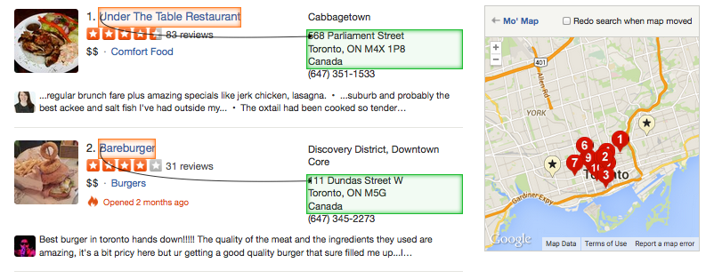
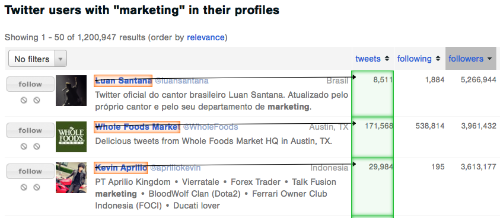

Building a list of valuable leads at the top of your funnel is one of the most important parts of your sales process. Every sale starts with a lead, and you need to constantly update your pool of leads to find your ideal customer.
You can use ParseHub to scrape leads online without having to write any code. Keep reading and find out how to use a web scraping tool to get valuable customers and save a lot of time in the process.
Sales lead, you say?
A sales lead is an individual or a company that you identify as potentially interested in your product or service. Any target customer that has a need for your product or has the budget to buy it is considered a sales lead. The sales process always starts with gathering sales leads. For the best results, the goal is to collect quality leads - people who you think will benefit the most from what you have to offer. This way you can avoid spammy emails, and write personalized, meaningful messages that benefit your customer instead.

How do I find leads?
You can usually find information about potential customers online by visiting industry specific websites, social media platforms or business directories.
Make sure to collect the bio, contact info, social media links for each sales lead and any articles that will help you get to know your prospect better.
Just ask yourself:
- Are there any patterns in the type of customers that are buying from me already? Where are they coming from?
- Where do my potential customers hang out and work online?
- Are there any customers that are doing what you want them to do with your product or service but somewhere else?
- Do any directories, social media platforms or forums list my ideal customers?
Traditionally, the lead generation process is very time consuming and involves a lot of detail-oriented, manual work or costs a hefty amount. Here are a few ways people currently gather leads from the web:
1. Hire administrative workers overseas or interns to manually search for, copy and paste leads from the web. Amazon Mechanical Turk can also be used to split up manual tasks among pre-selected workers.
Imagine that you want to get the data for all of the small businesses in San Francisco from yelp.com. Copying and pasting this information can take days, if not weeks. Not to mention, the hourly cost for support workers can add up and there is no foolproof way to deal with quality issues.
2. Hire a developer to extract leads available online, for example from business directories or social media websites.
Each website has it’s own structure and can be poorly designed. The data you need is actually hidden in rows of code. If you are using the Chrome browser, just right click on a webpage and select “Inspect Elements” to see what I mean. A developer has to write a custom web scraping script, that runs through the entire website and gets the data you need. This approach is usually time consuming and expensive. If you need data from several websites, you will need to contract the developer to build a new web scraper for each site.
3. Purchase lists of leads
There are various agencies selling lists that combine names, emails and addresses together. However, these lists contain thousands of leads that may be outdates, of low quality or not tailored to what you are trying to sell. You don’t have the flexibility to choose which leads are collected and where they come from.
How can I find leads 10x faster with the right tool?
Using a web scraping tool that you can learn by yourself, without writing any code, can make things a lot faster and easier for you. The only thing you have to do is find websites where your potential customers are listed. You will need to select the information you want from each website using ParseHub and it will extract the data for you.
Steps:
- Find the website that you want information from
- Set up a project with ParseHub. Show ParseHub an example page that you want data from. You can also combine tools to unlock advanced features, that will let you grab more information from the website such as links, hidden elements and images.
- Run the project, wait a few minutes (depending on the amount of data you are extracting) and download a spreadsheet with thousands of leads.
That’s it! You can repeat the steps above for each website you have in mind.
How do I pick the right websites with leads?
- Identify exactly who your target customer is.
- Look at business directories or listings in the industry that you are targeting.
- Look at communities and marketplaces where your prospects can be listed.
- Find forums, social media portals, Q&A sites where your potential customers usually interact.
- Search for key-terms that describe your ideal leads on LinkedIn and Twitter.
Ok great but…
What are some real-life examples?

Use Case #1: You are selling a product to marketing professionals.
Let’s say you have a great new social media analytics product that you want marketing professionals to try. You can search for, “social media marketers”, “digital marketers” or “growth hackers” on the websites below and use ParseHub to gather more information about each
prospect customer.
FollowerWonk.com – a directory of all Twitter users, their social authority score and number of followers. You can search for anyone that mentions marketing in their bio, extract all of the leads with ParseHub and reach out with personalized messages.
Elance.com & Odesk.com – a marketplace for freelancers. You can create a job posting to hire testers for your product and use ParseHub to invite and message every freelancer that fits your criteria.
Learn how to hire freelancers 10x faster with ParseHub.
- LinkedIn – professional social network. You can collect LinkedIn profiles of all the marketing professionals, so you can track the leads you contact. Just don’t forget to upgrade to the LinkedIn premium account.
Use Case #2: You are selling a service to business owners
Let’s say you want to offer local businesses an advertising spot on your website. Before writing a personalized message check out some of the business directories listed below.
- Yell.com – a small and medium-sized enterprise listing for the UK
- Yellowpages.com – a business listing site for Canada
- Yelp.com – a worldwide listing of business owners
- Foursquare.com – a local business search and discovery engine
- Etsy.com – a marketplace to sell handmade and vintage crafts
- Kickstarter.com – usually business owners looking for funding for their innovative projects

Use Case #3: You are building a community for real estate professionals
Now, let’s say you are building a website that brings together real estate professionals, rental
hobbyists to share advice about the market. Where could you look for people to contact?
- Craigslist – local classifieds and forums. You can look under the “for sale” and “for rent” categories.
- Kijiji – community for posting online advertisements. Again, you can look who is selling or renting out their property.
- Realtor.com – listing of available properties for rent/sale
And there you have it! A few places you can start looking for quality leads and how ParseHub can make this process much faster for you. On a final note, just make sure you personalize every message that you send and avoid spamming. It’s a great idea to use the time that you save gathering quality leads to do more research about each lead.